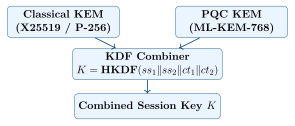

Chapter 6: Hybrid Cryptography¶
6.1 Rationale for Hybrid Cryptography¶
Hybrid cryptography combines a classical algorithm with a post-quantum algorithm in a single key exchange or signature scheme. The core security argument:
Hybrid Security Guarantee
A hybrid scheme is secure if either the classical or the PQC component is secure. If a breakthrough attack on MLWE is found, the classical ECDH component maintains security against classical attackers. If a CRQC becomes available, the PQC component maintains security against quantum attackers. This “belt and suspenders” approach is the recommended transition strategy.

6.2 Generic Hybrid KEM Construction¶
The standard hybrid KEM construction follows RFC 9180 (HPKE) combined with IETF draft for hybrid PQC:
Algorithm: Hybrid KEM Construction
-
KeyGen:
-
\((ek_1, dk_1) \leftarrow \text{KEM}_1\text{.KeyGen}()\) // Classical (e.g., X25519)
-
\((ek_2, dk_2) \leftarrow \text{KEM}_2\text{.KeyGen}()\) // PQC (e.g., ML-KEM-768)
-
return \((ek = ek_1 \| ek_2, \; dk = dk_1 \| dk_2)\)
-
Encapsulate\((ek)\):
-
\((K_1, ct_1) \leftarrow \text{KEM}_1\text{.Encaps}(ek_1)\)
-
\((K_2, ct_2) \leftarrow \text{KEM}_2\text{.Encaps}(ek_2)\)
-
\(K \leftarrow \text{HKDF-SHA256}(K_1 \| K_2, ct_1 \| ct_2 \| ek)\)
-
return \((K, \; ct = ct_1 \| ct_2)\)
-
Decapsulate\((dk, ct)\):
-
\(K_1 \leftarrow \text{KEM}_1\text{.Decaps}(dk_1, ct_1)\)
-
\(K_2 \leftarrow \text{KEM}_2\text{.Decaps}(dk_2, ct_2)\)
-
\(K \leftarrow \text{HKDF-SHA256}(K_1 \| K_2, ct_1 \| ct_2 \| ek)\)
-
return \(K\)
The KDF combiner ensures that the combined key \(K\) is indistinguishable from random if either \(K_1\) or \(K_2\) is a uniformly random string. This provides the hybrid security guarantee.
6.3 X25519MLKEM768 — The Recommended Hybrid¶
X25519MLKEM768 is the specific hybrid KEM standardized in IETF drafts and already deployed by major browsers and CDNs:
| Component | Element | Classical | PQC / Total |
|---|---|---|---|
| X25519 | Public key | 32 bytes | — |
| ML-KEM-768 | Encapsulation key | — | 1184 bytes |
| Combined | Public key total | 32 B | 1216 bytes |
| X25519 | Ciphertext | 32 bytes | — |
| ML-KEM-768 | Ciphertext | — | 1088 bytes |
| Combined | Ciphertext total | 32 B | 1120 bytes |
| Combined | Shared secret | 32+32 B | 32 B (after KDF) |
6.3.1 TLS Overhead Analysis¶
| Method | ClientHello (B) | ServerHello (B) | Extra RTT | Security |
|---|---|---|---|---|
| X25519 (classical) | 32 | 32 | 0 | Classical only |
| X25519MLKEM768 (hybrid) | 1216 | 1120 | 0 | Classical + PQC |
| ML-KEM-768 (pure PQC) | 1184 | 1088 | 0 | PQC only |
The additional overhead of X25519MLKEM768 over classical X25519 is \(\sim\)2 KB per TLS handshake, adding negligible latency (\(<\)1ms) on modern networks.
6.3.2 Deployment Status¶
| Product | Status | Notes |
|---|---|---|
| Google Chrome 131+ | Deployed | Default since Chrome 131 (Nov 2024) |
| Mozilla Firefox 132+ | Deployed | Enabled by default |
| Cloudflare CDN | Deployed | \(>\)50% of TLS connections use PQC key exchange |
| Apple Safari | Announced | PQ3 for iMessage; TLS hybrid coming |
| AWS (CloudFront) | Deployed | X25519MLKEM768 on edge |
| Microsoft Azure | In progress | Azure load balancer PQC roadmap |
6.4 Deployed Hybrid Protocols¶
6.4.1 Signal’s PQXDH (Post-Quantum Extended Diffie-Hellman)¶
Signal Protocol adopted PQXDH (2023) as the first widely deployed PQC messaging protocol:
-
Pre-key bundle: Each device publishes an ML-KEM-1024 encapsulation key alongside classical X25519 keys.
-
Initial message: Sender encapsulates to both the classical X25519 and ML-KEM-1024 keys.
-
Key derivation: Combined shared secret via HKDF, then used to initialize Double Ratchet.
-
Forward secrecy: Post-quantum forward secrecy is achieved by the ephemeral ML-KEM key per session.
6.4.2 Apple iMessage PQ3 (2024)¶
Apple’s PQ3 protocol for iMessage provides post-quantum protection at security level 3 (highest level Apple has deployed):
-
ML-KEM-768 hybrid key exchange for initial session establishment.
-
Periodic ML-KEM re-keying to limit exposure of stored messages.
-
ML-DSA-65 for device identity authentication.
-
Backward-compatible with existing iMessage infrastructure.
-
Deployed February 2024, protecting over 1 billion iMessage users.
6.4.3 Meta Messenger E2EE¶
Meta’s end-to-end encrypted Messenger (2024) uses hybrid PQC:
-
Key exchange: X25519 + CRYSTALS-Kyber (predecessor to ML-KEM) hybrid.
-
Authentication: ECDSA + ML-DSA hybrid signatures for device keys.
6.5 Hybrid Signatures¶
Hybrid signatures combine classical and PQC signature schemes for the transition period:
6.5.1 Composite Signatures (X.509)¶
The IETF “composite crypto” drafts define hybrid X.509 certificates with dual signatures:
# Generate composite keypair: ML-DSA-65 + ECDSA P-384
openssl genpkey -algorithm id-MLDSA65-ECDSA-P384-SHA384 \
-out composite_key.pem \
-provider oqsprovider -provider default
# Self-signed composite certificate
openssl req -new -x509 \
-key composite_key.pem \
-out composite_cert.pem \
-days 3650 \
-subj "/CN=Hybrid PQC Server" \
-provider oqsprovider -provider default
# The certificate contains TWO signature values:
# 1. ML-DSA-65 signature (PQC-resistant)
# 2. ECDSA-P384 signature (classical, for legacy compatibility)
openssl x509 -in composite_cert.pem -text | grep "Signature Algorithm"
6.5.2 Concatenated Hybrid Signatures¶
An alternative approach concatenates the two signatures:
Verification requires both signatures to be valid (OR semantics provide security if either is secure against its threat model).
6.6 Hybrid KDF Security Analysis¶
The security of the hybrid KDF combiner depends on the construction:
| Combiner | Construction | Security | Standard |
|---|---|---|---|
| XOR | \(K = K_1 \oplus K_2\) | Weak; only safe if both uniform | Avoid |
| Concatenation+KDF | \(K = \text{HKDF}(K_1 \| K_2, …)\) | Strong | IETF draft |
| Split KDF | \(K_1' = \text{KDF}(K_1), K_2' = \text{KDF}(K_2), K = K_1' \oplus K_2'\) | Strong | RFC 8470 |
HKDF Hybrid Combiner Best Practice
Use: \(K = \text{HKDF}(K_1 \| K_2, \; ct_1 \| ct_2 \| ek_1 \| ek_2, \;\text{“hybrid-kem”})\)
Including the ciphertexts and public keys in the HKDF info field prevents “ciphertext binding” attacks where an adversary substitutes part of the hybrid ciphertext.
6.7 IETF Standards for Hybrid PQC¶
| Draft/RFC | Scope | Description | Status |
|---|---|---|---|
| draft-ietf-tls-mlkem | TLS | ML-KEM in TLS 1.3 | Active |
| draft-ietf-tls-hybrid-design | TLS | Hybrid key exchange design | Active |
| RFC 9151 | TLS | Classic-hybrid ECDH-KEM for TLS | Published |
| draft-ietf-pquip-pqc-engineers | General | PQC for engineers | Active |
| draft-ietf-lamps-pq-composite-kem | X.509 | Composite PQC KEMs for X.509 | Active |
| draft-ietf-lamps-pq-composite-sigs | X.509 | Composite PQC signatures | Active |
| draft-ietf-openpgp-pqc | OpenPGP | ML-KEM + ML-DSA in PGP | Active |
6.8 When to Use Pure PQC vs Hybrid¶
| Scenario | Hybrid PQC | Pure PQC |
|---|---|---|
| Transition period (now–2030) | Recommended for most | Consider for new greenfield systems |
| Maximum classical compatibility | Required | Not suitable |
| Bandwidth-critical (IoT) | May be too large | Preferred (smaller) |
| Classified systems (NSA CNSA 2.0) | Acceptable | Required eventually |
| FIPS compliance | Check FIPS 140-3 status | Preferred post-2025 |
| Long-lived root CAs | Composite certs | Consider pure PQC |
| Post-2030 deployments | Sunset plan needed | Recommended |
6.9 Summary¶
-
Hybrid cryptography provides a “belt and suspenders” security guarantee: secure if either component is secure.
-
X25519MLKEM768 is the recommended hybrid KEM, already deployed in Chrome, Firefox, and Cloudflare.
-
The TLS overhead of hybrid PQC is \(\sim\)2 KB per handshake — negligible for most applications.
-
Signal’s PQXDH and Apple’s PQ3 demonstrate successful large-scale hybrid PQC deployments.
-
HKDF is the correct combiner for hybrid KEMs; XOR-only combiners are insecure.
-
Composite X.509 certificates with dual signatures (classical + PQC) enable PKI migration without breaking legacy clients.
-
Hybrid PQC is the recommended transition strategy for 2025–2030; pure PQC becomes the target post-2030.